1. Environment Perception: Similar to Animal Sensory Organs
The primary task of an autonomous vehicle is to perceive its surroundings. This function is accomplished through various sensors including radar, LiDAR (Light Detection and Ranging), cameras, and ultrasonic sensors. These sensors work together, akin to animal sensory organs:
(1) Camera:
Similar to human eyes, help the vehicle "see" road conditions, traffic signals, and road signs.
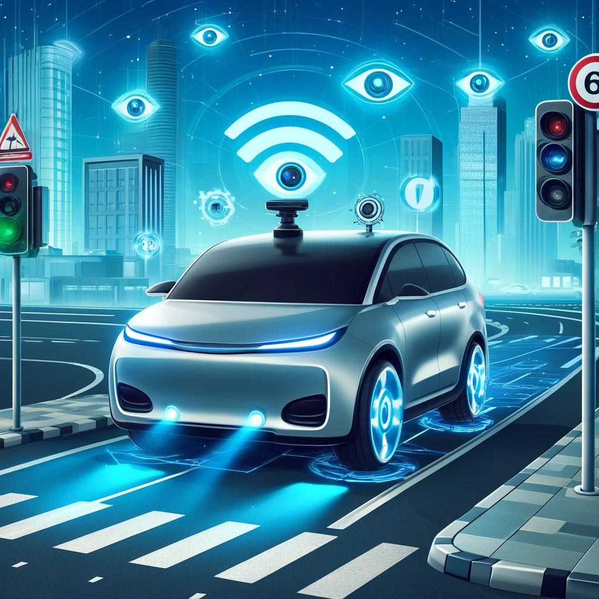(2) Radar:
Radar is a technology that utilizes radio waves to measure the distance, direction (including azimuth and elevation), and radial velocity of objects relative to a particular location. It's a form of radiodetermination used for detecting and tracking various entities like aircraft, ships, spacecraft, guided missiles, vehicles, as well as for mapping weather patterns and terrain. A radar system comprises a transmitter that emits electromagnetic waves in the radio or microwave spectrum, a transmitting antenna, and often the same antenna doubles as the receiving antenna, along with a receiver and processor to identify characteristics of the targets. Radio waves, whether pulsed or continuous, are sent out by the transmitter, bounce off the objects, and return to the receiver. This reflection provides data about the objects' positions and velocities.Similar to how bats use echolocation, it sends out electromagnetic waves and receives the echoes to detect objects around the vehicle.
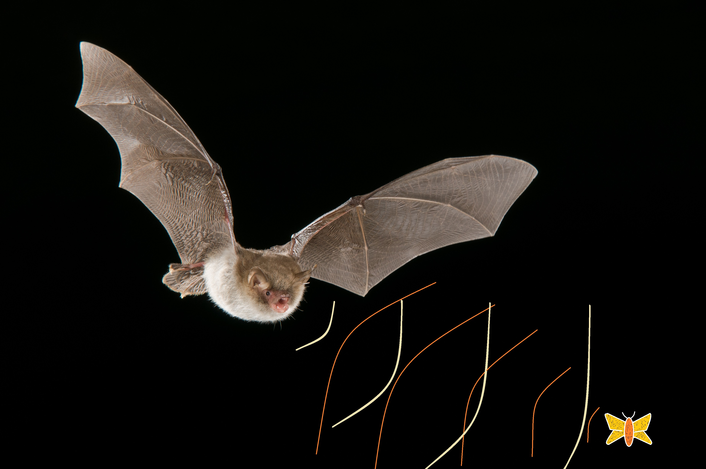 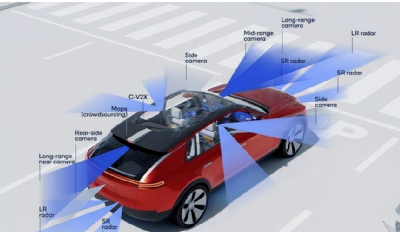(3) LiDAR:
Like radar, but uses laser beams to accurately measure the distance and shape of objects, akin to how fish use electric fields to sense their surroundings.
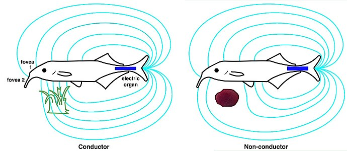 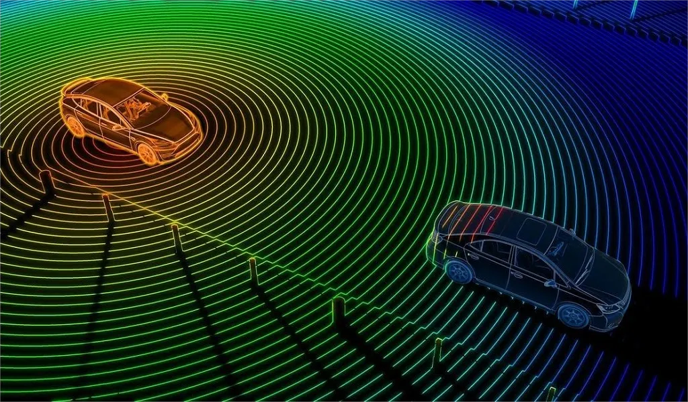(4) Ultrasonic sensors:
Sensors play a crucial role in allowing vehicles to interact effectively with their driving environment. Common types of sensors used include cameras, LiDAR, ultrasound, and radar. Typically, control systems in vehicles blend data from various sensors, enhancing the overall perception of the environment and enabling the systems to verify their own data to correct possible inaccuracies. For instance, in challenging conditions like a nighttime snowstorm, radar can still function and provide imagery when cameras and LiDAR may fail, though with less precision. Tesla, after experimenting with radar and ultrasound, has shifted to a vision-only strategy, arguing that if humans can drive relying solely on vision, cars should be able to do the same. Tesla also highlights the lower cost of cameras compared to other sensors. In contrast, Waymo utilizes LiDAR sensors for their higher resolution and points to the falling costs of LiDAR technology as justification for their use.Used for close-range detection, similar to how dolphins emit ultrasonic waves and listen for echoes to locate and identify nearby objects.
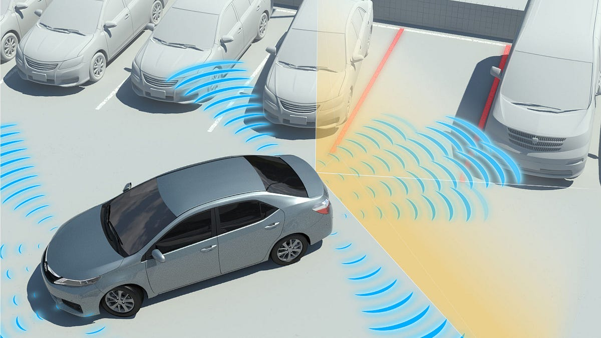 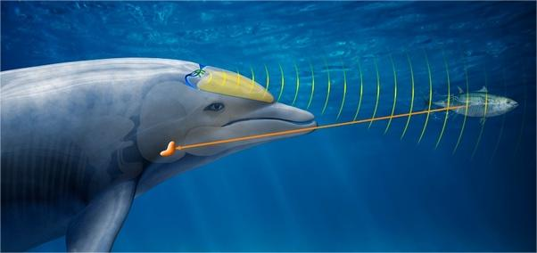Through the integrated and coordinated work of these sensors, autonomous vehicles can obtain a detailed and comprehensive view of their surroundings.
2. Decision Making: Analogous to the Human Brain's Processing Center
At the core of an autonomous vehicle is its decision-making system, which usually relies on a powerful central processing unit and artificial intelligence algorithms. This system is akin to the human brain, not only processing data from sensors but also predicting potential risks and making response strategies. For example:
(1) Path Planning:
Path planning involves figuring out a sequence of steps that a vehicle can follow to go from its starting point to its destination. This process uses techniques like graph-based search and variational-based optimization. Graph-based search helps make tough decisions, like how to navigate around another vehicle or an obstacle. Variational-based optimization techniques are used to impose stricter rules on the vehicle's path to avoid collisions. To determine a vehicle's broader route, methods like Voronoi diagrams, occupancy grid mapping, or driving corridor algorithms are used. The driving corridor algorithm specifically helps the vehicle find and travel within spaces that are defined by lanes or barriers.

(2) Dynamic Decisions:
In transit, the system must make real-time decisions, such as changing lanes, slowing down, or circumventing obstacles, similar to how a person navigates through a crowded market.
3. Execution of Actions: Mimicking Muscle Responses
Once decisions are made, the autonomous vehicle's control systems execute the corresponding actions, including acceleration, braking, or steering. This process can be likened to how human muscles respond to brain signals. The vehicle's various actuators ensure precise and rapid response to the algorithm's commands, safely driving the vehicle.
4. Communication Systems: Similar to Social Behavior
Lastly, autonomous vehicles typically are equipped with V2X (Vehicle-to-Everything) communication technologies, allowing them to exchange data with other vehicles and traffic infrastructure, similar to human or animal social interactions. This enables vehicles to share and receive information about traffic flow, road condition updates, or emergencies, thereby enhancing the safety and efficiency of driving.
The capabilities of self-driving cars come from some unknown mysterious creature
1. Aerolith
Origin:
Born amidst the swirling winds and magnetic anomalies of the Nebula of Orion, Aerolith thrives in an environment where the landscape is sculpted by cosmic forces.
Characteristics:
Aerolith's body is equipped with bio-organic antennae resembling satellite dishes, which it uses to navigate the complex celestial currents. Its wings, patterned with radiant, compass-like markings, emit bioluminescent light, helping it find its way during the eternal twilight of its home world.
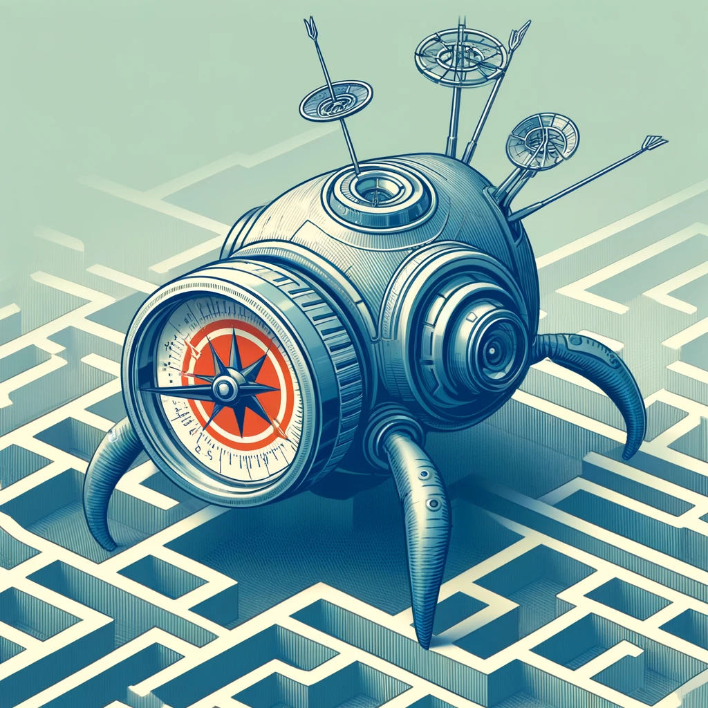2. Glimmergleam
Origin:
Glimmergleam comes from the densely forested world of Lumoria, where bioluminescent flora light up the forest floor, and thick foliage covers the sky.
Characteristics:
This creature's large, multi-faceted eyes can absorb minimal light, making it an excellent nocturnal hunter. The reflective qualities of its eyes create a natural camouflage among the glowing plants, while its heightened perception helps it to detect the slightest movements in the dark forest.
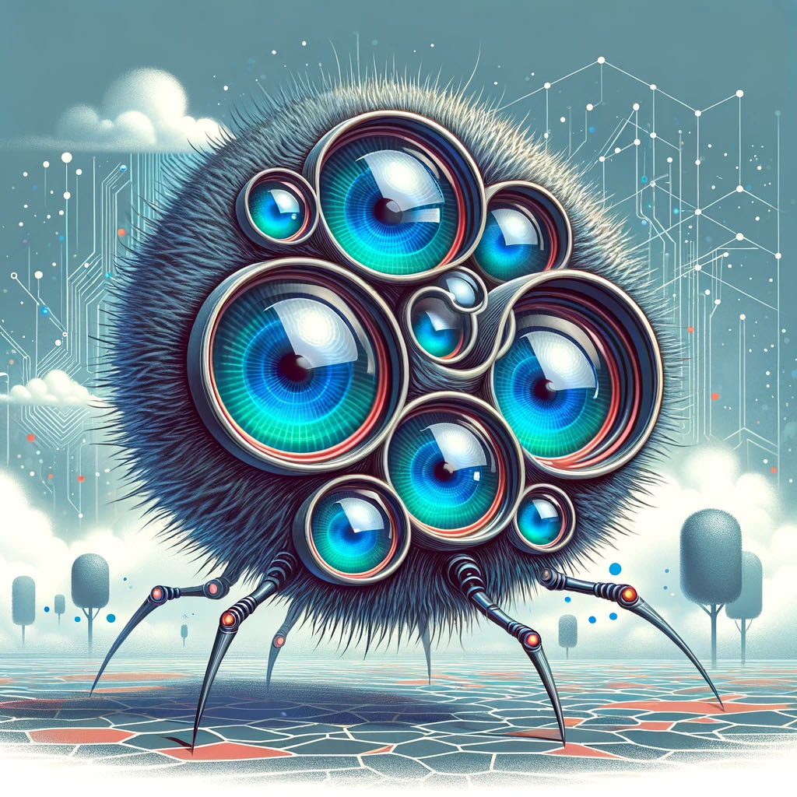3. Routonix
Origin:
In the intricate labyrinth of underground tunnels on planet Pathara, Routonix evolved to navigate through its complex, ever-changing terrain.
Characteristics:
Its segmented, flexible body can coil around narrow passageways and expand over obstacles, covered with tactile sensors that detect vibrations and subtle shifts in the environment. These sensors allow Routonix to map its path meticulously, ensuring that it never retraces its steps unless it chooses to.
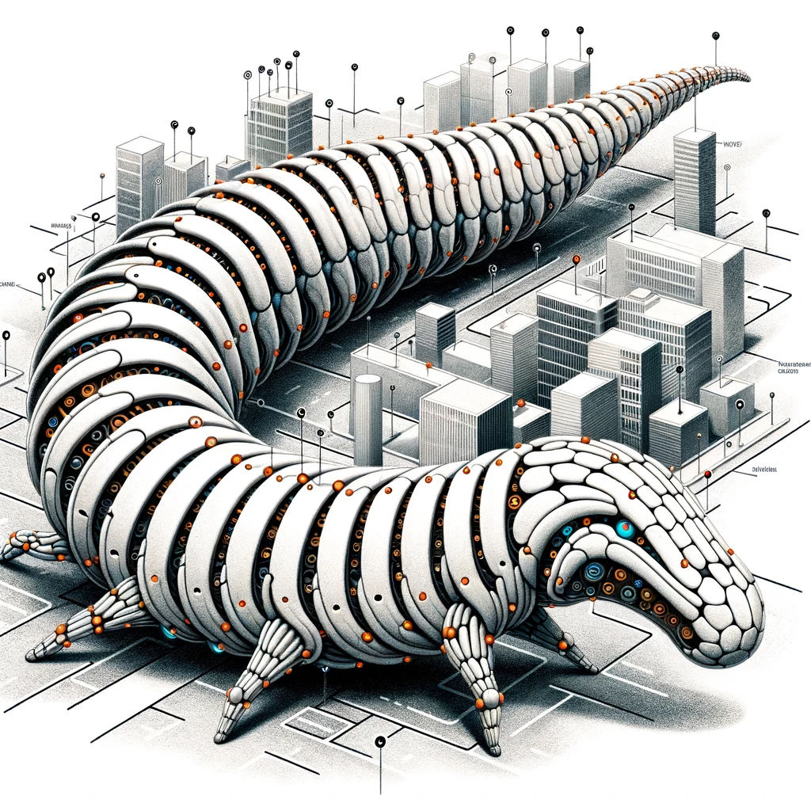4. Cartaflux
Origin:
Descended from the sky mappers of the floating city of Stratonica, Cartaflux has adapted to an environment where the landscape constantly changes due to the drifting nature of its airborne islands.
Characteristics:
Cartaflux's skin displays a live map of its surroundings, constantly updating with new data. This allows it to navigate the volatile skies where landmarks may shift or disappear. Its body can emit a soft glow, illuminating paths in the dense mists that often envelop its home.
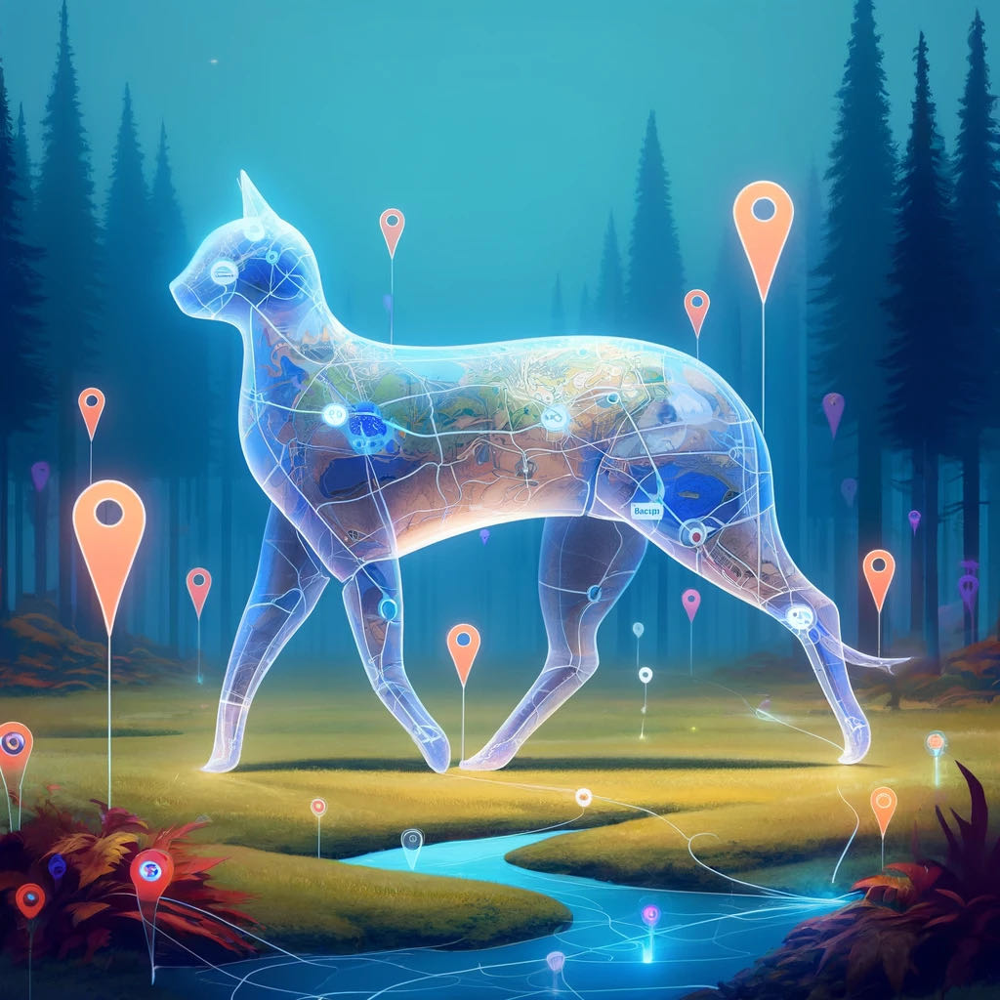5. Echoquill
Origin:
From the echoing caverns of the Misty Mountains, where sounds carry strange tales of old, Echoquill mastered the art of using sound to navigate and hunt.
Characteristics:
With appendages that can both emit and receive detailed sonic maps of its surroundings, Echoquill can "see" without sight. These appendages resemble feathers and can articulate with precision, picking up frequencies from the infrasonic to the ultrasonic range, thus allowing Echoquill to detect both predators and prey at great distances.
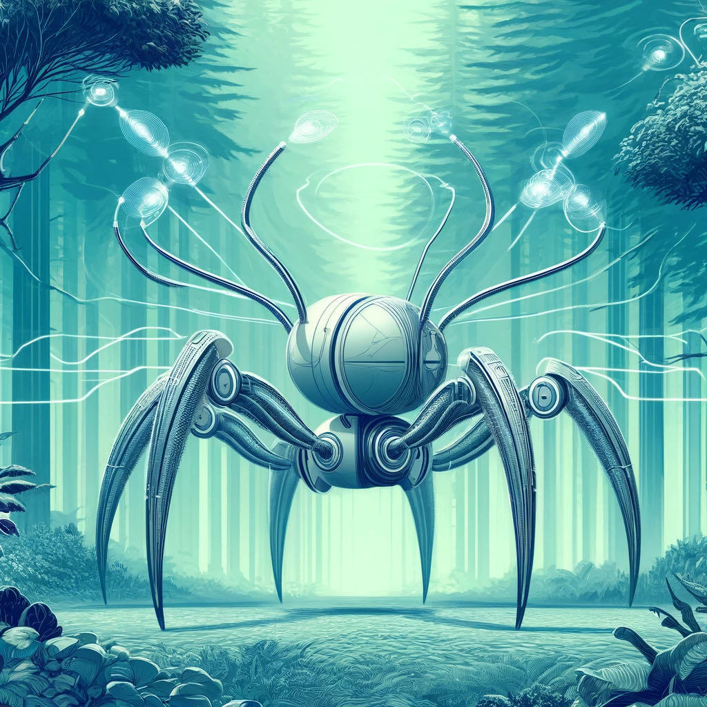